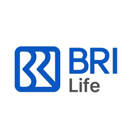
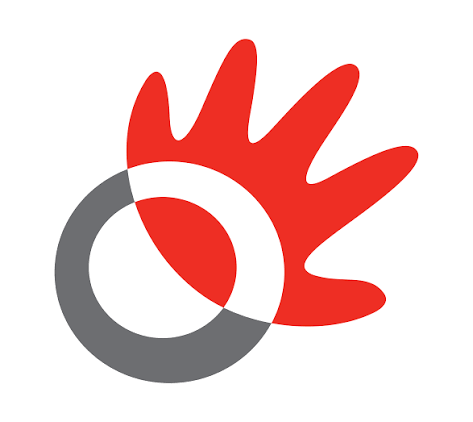
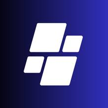
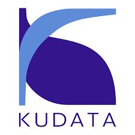

Programming & Databases
Prepare, explore, and query data with the right tools for the problem.
Statistics graduate transforming complex datasets into clear insights, intelligent models, and dashboards that help businesses move forward.

BRI Life
Telkom Indonesia
Technocolabs
Kudata.IdI connect technical analysis with real business questions, turning complexity into something clear and actionable.
I am a Statistics graduate from Sebelas Maret University, passionate about Data Analytics, Data Science, and Business Intelligence.
From preparing datasets to building dashboards and predictive models, I connect technical analysis with business needs. My experience in insurance, telecommunications, and digital platforms shapes how I communicate findings that are clear, relevant, and actionable.
More About MeBachelor of Statistics
Aug 2022 – Jul 2026
Policyholder records analyzed
BRI LifeReport pages used for RAG
Telkom IndonesiaTalents covered by KPI monitoring
Telkom IndonesiaA practical toolkit across analytics, business intelligence, and AI, grounded in statistics and hands-on project experience.
Prepare, explore, and query data with the right tools for the problem.
Make performance easier to understand through interactive dashboards and clear reporting.
Translate analytical questions into predictive models and evaluate what the results mean.
Connect documents with conversational interfaces and context-aware information retrieval.
Connect data sources, reduce repetitive preparation, and support dependable reporting workflows.
Build reliable foundations through data quality, statistical reasoning, and thoughtful feature design.
Five internships connecting analytics, technology, and decision-making across different industries.
Illustrative analytics workflow
From enterprise AI assistants to business dashboards, explore the questions, tools, and contributions behind my work.
A conversational interface to 800+ pages of corporate reports, combining semantic search, reranking, and workflow automation to make information easier to access.
Automated performance data flows and the third iteration of a Power BI dashboard, helping stakeholders monitor KPIs and understand talent performance.
An interactive view of program performance across branches and operational units, covering premium achievement, customer participation, product distribution, and rewards.
Four connected datasets brought together in Looker Studio to understand engagement, survey fulfillment, user activity, and payment performance.
Research on the early detection of financial crises in the Philippines using sequential deep learning models: LSTM, Hybrid CNN-LSTM, and GRU.
Illustrations show project concepts. Explore each project for scope, methods, and contributions.
Selected achievements in data science, analytics, visualization, and communicating ideas through data.
Bandung Institute of Technology (ITB)
Gadjah Mada University (UGM)
Trunojoyo University Madura (UTM)
EPSILON · Padang State University
Infographic Competition · Tadulako University
SSDC · Statistics Fair UNS
Have an analytics challenge, a project idea, or a career opportunity? Let’s start a conversation and explore what we can build.
Let’s TalkConnect with me through email, LinkedIn, or GitHub. I’m based in Demak, Indonesia.